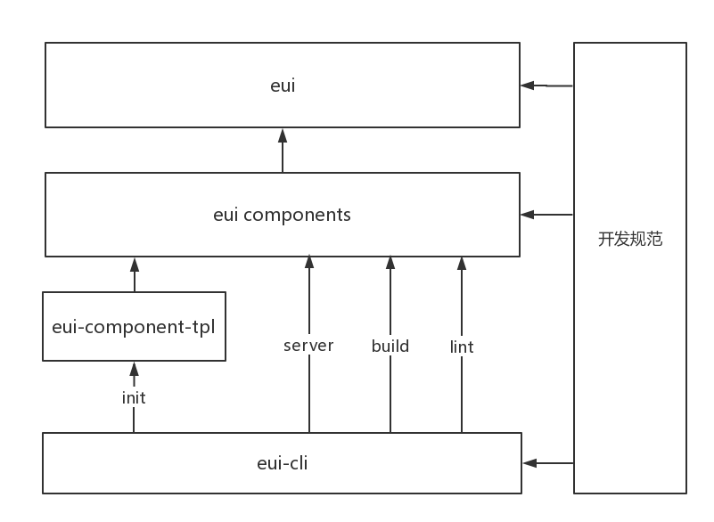

新员工转正述职报告
述职部门：EWT大前端
述职人：杨逸杰
目录
工作汇报
工作体会
工作规划
工作汇报
业务方向
武大活动页
暑假专题
OA日常迭代
基建方向
eui 组件库
武大活动页
基于flex的自适应布局
接入大数据埋点
暑期专题
定制化流程
基于redux的数据流管理
OA日常迭代
核对款项申请（财务）-- PC端
市场部大会大屏展示 -- PC端
消息中心 -- Mobile端
签到打卡 -- Mobile端
eui组件库
基础架构设计优化
eui-dialog
eui-popover

eui 基础架构优化内容
开发规范
强制规范 commit message, npm version 规范发布
eui component template的瘦身
迁移webpack loader至 eui-cli
eui component 打包优化
抽离css样式，打包压缩
187K => 87k
工作体会
123
123
工作规划
业务方向
OA重构
基建方向
eui
mst workflow
THE END
Thanks